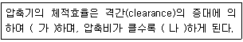
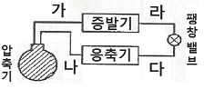
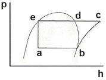
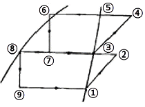
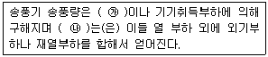

공조냉동기계기능사 (2015-10-10 기출문제)
1과목: 공조냉동안전관리
1. 냉동제조의 시설 중 안전유지를 위한 기술기준에 관한 설명으로 틀린 것은?
- 안전밸브에 설치된 스톱밸브는 특별한 수리 등 특별한 경우 외에는 항상 열어둔다.
- 냉동설비의 설치공사가 완공되면 시운전 할 때 산소가스를 사용한다.
- 가연성 가스의 냉동설비 부근에는 작업에 필요한 양 이상의 연소물질을 두지 않는다.
- 냉동설비의 변경공사가 완공되어 기밀시험 시 공기를 사용할 때에는 미리 냉매 설비 중의 가연성가스를 방출한 후 실시한다.
(정답률: 72%)

2. 줄 작업 시 안전관리 사항으로 틀린 것은?
- 칩은 브러시로 제거한다.
- 줄의 균열 유무를 확인한다.
- 손잡이가 줄에 튼튼하게 고정되어 있는가 확인한 다음에 사용한다.
- 줄 작업의 높이는 작업자의 어깨 높이로 하는 것이 좋다.
(정답률: 92%)
3. 암모니아의 누설 검지 방법이 아닌 것은?
- 심한 자극성 냄새를 가지고 있으므로, 냄새로 확인이 가능하다.
- 적색 리트머스 시험지에 물을 적셔 누설 부위에 가까이 하면 누설 시 청색으로 변한다.
- 백색 페놀프탈레인 용지에 물을 적셔 누설 부위에 가까이 하면 누설 시 적색으로 변한다.
- 황을 묻힌 심지에 불을 붙여 누설 부위에 가져가면 누설 시 홍색으로 변한다.
(정답률: 79%)
4. 위험물 취급 및 저장 시의 안전조치 사항 중 틀린 것은?
- 위험물은 작업장과 별도의 장소에 보관하여야 한다.
- 위험물을 취급하는 작업장에는 너비 0.3m 이상, 높이 2m 이상의 비상구를 설치하여야 한다.
- 작업장 내부에는 위험물을 작업에 필요한 양만큼만 두어야 한다.
- 위험물을 취급하는 작업장의 비상구 문은 피난 방향으로 열리도록 한다.
(정답률: 84%)
5. 다음 중 압축기가 시동되지 않는 이유로 가장 거리가 먼 것은?
- 전압이 너무 낮다.
- 오버로드가 작동하였다.
- 유압보호 스위치가 리셋되어 있지 않다.
- 온도조절기 감온통의 가스가 빠져 있다.
(정답률: 70%)
6. 산소용접 중 역화현상이 일어났을 때 조치 방법으로 가장 적합한 것은?
- 아세틸렌 밸브를 즉시 닫는다.
- 토치 속의 공기를 배출한다.
- 아세틸렌 압력을 높인다.
- 산소압력을 용접조건에 맞춘다.
(정답률: 84%)
7. 드릴 작업 중 유의할 사항으로 틀린 것은?
- 작은 공작물이라도 바이스나 크랩을 사용하여 장착한다.
- 드릴이나 소켓을 척에서 해체 시킬 때에는 해머를 사용한다.
- 가공 중 드릴 절삭 부분에 이상음이 들리면 작업을 중지하고 드릴 날을 바꾼다.
- 드릴의 탈착은 회전이 완전히 멈춘 후에 한다.
(정답률: 92%)
8. 안전장치의 취급에 관한 사항으로 틀린 것은?
- 안전장치는 반드시 작업 전에 점검한다.
- 안전장치는 구조상의 결함유무를 항상 점검한다.
- 안전장치가 불량할 때에는 즉시 수정한 다음 작업한다.
- 안전장치는 작업 형편상 부득이한 경우에는 일시 제거해도 좋다.
(정답률: 92%)
9. 전기용접 작업 시 전격에 의한 사고를 예방할 수 있는 사항으로 틀린 것은?
- 절연 홀더의 절열부분이 파손되었으면 바로 보수하거나 교체한다.
- 용접봉의 심선은 손에 접촉되지 않게 한다.
- 용접용 케이블은 2차 접속단자에 접촉한다.
- 용접기는 무부하 전압이 필요 이상 높지 않은 것을 사용한다.
(정답률: 85%)
10. 산업안전보건법의 제정 목적과 가장 거리가 먼 것은?
- 산업재해 예방
- 쾌적한 작업환경 조성
- 산업안전에 관한 정책수립
- 근로자의 안전과 보건을 유지·증진
(정답률: 77%)
11. 다음 중 용융온도가 비교적 높아 전기 기구에 사용하는 퓨즈(Fuse)의 재료로 가장 부적당한 것은?
- 납
- 주석
- 아연
- 구리
(정답률: 78%)
12. 가스 용접법의 특징으로 틀린 것은?
- 응용 범위가 넓다.
- 아크용접 에 비해 불꽃의 온도가 높다.
- 아크용접에 비해 유해 광선의 발생이 적다.
- 열량조절이 비교적 자유로워 박판용접에 적당하다.
(정답률: 73%)
13. 크레인의 방호장치로서 와이어로프가 후크 에서 이탈하는 것을 방지하는 장치는?
- 과부하 방지 장치
- 권과 방지 장치
- 비상 정지 장치
- 해지 장치
(정답률: 64%)
14. 일반적인 컨베이어의 안전장치로 가장 거리가 먼 것은?
- 역회전 방지장치
- 비상 정지장치
- 과속 방지장치
- 이탈 방지장치
(정답률: 69%)
15. 가스용접 작업 중 일어나기 쉬운 재해로 가장 거리가 먼 것은?
- 화재
- 누전
- 가스중독
- 가스폭발
(정답률: 90%)
2과목: 냉동기계
16. 액백(Liquid back)의 원인으로 가장 거리가 먼 것은?
- 팽창밸브의 개도가 너무 클 때
- 냉매가 과충전되었을 때
- 액분리기가 불량일 때
- 증발기 용량이 너무 클 때
(정답률: 63%)
17. 다음 표의 ( )안에 들어갈 말로 옳은 것은?

- 가 : 감소, 나 : 감소
- 가 : 증가, 나 : 감소
- 가 : 감소, 나 : 증가
- 가 : 증가, 나 : 증가
(정답률: 63%)
18. 다음 설명 중 옳은 것은?
- 1kW는 760kcal/h이다.
- 증발열, 응축열, 승화열은 잠열이다.
- 1kg의 얼음의 용해열은 860kcal이다.
- 상대습도란 포화증기압을 증기압으로 나눈 것이다.
(정답률: 73%)
19. 다음 냉동장치에 대한 설명 중 옳은 것은?
- 고압차단스위치는 조정 설정 압력보다 벨로스에 가해진 압력이 낮을 때 접점이 떨어지는 장치이다.
- 온도식 자동 팽창밸브의 감온통은 증발기의 입구 측에 붙인다.
- 가용전은 프레온 냉동장치의 응축기나 수액기 등을 보호하기 위하여 사용된다.
- 파열판은 암모니아 왕복동 냉동장치에 만 사용된다.
(정답률: 61%)
20. 가열원이 필요하며 압축기가 필요 없는 냉동기는?
- 터보 냉동기
- 흡수식 냉동기
- 회전식 냉동기
- 왕복동식 냉동기
(정답률: 76%)
21. 다음 그림에서 고압 액관은 어느 부분인가?

- 가
- 나
- 다
- 라
(정답률: 72%)
22. 왕복 압축기에서 이론적 피스톤 압출량(m3/h)의 산출 식으로 옳은 것은? (단, 기통수 N, 실린더 내경 D[m], 회전수 R[rpm], 피스톤행정 L[m]이다.)
- V=D·L·R·N·60
- V=(π/4)·D·L·R·N
- V=(π/4)·D·L·R·N·60
- V=(π/4)·D2·L·R·N·60
(정답률: 71%)
23. 다음 중 모세관의 압력 강하가 가장 큰 것은?
- 직경이 작고 길이가 길수록
- 직경이 크고 길이가 짧을수록
- 직경이 작고 길이가 짧을수록
- 직경이 크고 길이가 길수록
(정답률: 67%)
24. 다음 중 압력 자동 급수밸브의 주된 역할은?
- 냉각수온을 제어한다.
- 증발온도를 제어한다.
- 과열도 유지를 위해 증발압력을 제어한다.
- 부하변동에 대응하여 냉각수량을 제어한다.
(정답률: 71%)
25. 탄성 이 부족하여 석면, 고무, 금속 등과 조합 하여 사용되며, 내열범위는 –260~260℃ 정도로 기름에 침식되지 않는 패킹은?
- 고무 패킹
- 석면조인트 시트
- 합성수지 패킹
- 오일실 패킹
(정답률: 74%)
26. NH3 냉매를 사용하는 냉동장치에서 일반적으로 압축기를 수냉식으로 냉각하는 주된 이유는?
- 냉매의 응축 압력이 낮기 때문에
- 냉매의 증발 압력이 낮기 때문에
- 냉매의 비열비 값이 크기 때문에
- 냉매의 임계점이 높기 때문에
(정답률: 61%)
27. 냉동기유에 대한 설명으로 옳은 것은?
- 암모니아는 냉동기유에 쉽게 용해되어 윤활 불량의 원인이 된다.
- 냉동기유는 저온에서 쉽게 응고되지 않고 고온에서 쉽게 탄화되지 않아야 한다.
- 냉동기유의 탄화현상은 일반적으로 암모니아 보다 프레온 냉동장치에서 자주 발생한다.
- 냉동기유는 증발하기 쉽고, 열전도율 및 점도가 커야 한다.
(정답률: 76%)
28. 열펌프(heat pump)의 구성요소가 아닌 것은?
- 압축기
- 열교환기
- 4방 밸브
- 보조 냉방기
(정답률: 66%)
29. 10A의 전류를 5분간 도체에 흘렸을 때 도선 단면을 지나는 전기량은?
- 3C
- 50C
- 3000C
- 5000C
(정답률: 66%)
30. 동관접합 중 동관의 끝을 넓혀 압축이음쇠로 접합하는 접합방법을 무엇이라고 표현하는가?
- 플랜지 접합
- 플레어 접합
- 플라스턴 접합
- 빅토리 접합
(정답률: 65%)
31. 저항이 50요인 도체에 100 V의 전압을 가할 때 그 도체에 흐르는 전류는?
- 0.5A
- 2A
- 5A
- 5000A
(정답률: 74%)
32. 왕복동식 냉동기와 비교하여 터보식 냉동기의 특징으로 옳은 것은?
- 회 전수가 매우 빠르므로 동작 밸런스를 잡기 어렵고 진동이 크다.
- 일반적으로 고압 냉매를 사용하므로 취급이 어렵다.
- 소용량의 냉동기에 적용하기에는 경제적이지 못하다.
- 저온장치에서도 압축단수가 적어지므로 사용도가 넓다.
(정답률: 53%)
33. 다음 그림과 같은 건조 증기 압축 냉동사이클의 성적계수는? (단, 엔탈피 a=133.8kcal/kg, b=397.1 kcal/kg, c=452.2kcal/kg이다.)

- 5.37
- 5.11
- 4.78
- 3.83
(정답률: 64%)
34. 2단압축 2단팽창 냉동사이클을 모리엘 선도에 표시한 것이다. 각 상태에 대해 옳게 연결한 것은?

- 중간냉각기의 냉동효과 : ③ - ⑦
- 증발기의 냉동효과 : ② - ⑨
- 팽창변 통과직후의 냉매위치 : ⑤, ⑥
- 응축기의 방출열량 : ⑧ - ②
(정답률: 69%)
35. 다음 설명 중 옳은 것은?
- 냉각탑의 입구수온은 출구수온 보다 낮다.
- 응축기 냉각수 출구온도는 입구온도 보다 낮다.
- 응축기에서의 방출열량은 증발기에서 흡수하는 열량과 같다.
- 증발기의 흡수열량은 응축열량에서 압축일량을 뺀 값과 같다.
(정답률: 45%)
36. 1냉동톤(한국 RT)이란?
- 65 kcal/min
- 1.92 kcal/sec
- 3320 kcal/hr
- 55680 kcal/day
(정답률: 82%)
37. 유기질 보온재인 코르크에 대한 설명으로 틀린 것은?
- 액체, 기체의 침투를 방지하는 작용을 한다.
- 입상(粒狀), 판상(版狀) 및 원통 등으로 가공되어 있다.
- 굽힘성이 좋아 곡면시공에 사용해도 균열이 생기지 않는다.
- 냉수·냉매배관, 냉각기, 펌프 등의 보냉용에 사용된다.
(정답률: 72%)
38. 수냉식 응축기의 능력은 냉각수 온도와 냉각 수량에 의해 결정이 되는데, 응축기의 응축능력을 증대시키는 방법으로 가장 거리가 먼 것은?
- 냉각수량을 줄인다.
- 냉각수의 온도를 낮춘다.
- 응축기의 냉각관을 세척한다.
- 냉각수 유속을 적절히 조절한다.
(정답률: 63%)
39. 혼합원료를 일정량씩 동결시키도록 하는 장치인 배치(batch)식 동결장치의 종류로 가장 거리가 먼 것은?
- 수평형
- 수직형
- 연속형
- 브라인식
(정답률: 48%)
40. 브라인 부식방지처리에 관한 설명으로 틀린 것은?
- 공기와 접촉하면 부식성이 증대하므로 가능한 공기와 접촉하지 않도록 한다.
- CaCl2 브라인 1L에는 중크롬산소다 1.6g을 첨가하고 중크롬산소다 100g마다 가성소다 27g의 비율로 혼합한다.
- 브라인은 산성을 띠게 되면 부식성이 커지므로 pH 7.5~8.2 정도로 유지 되도록 한다.
- NaCl 브라인 1L에 대하여 중크롬산소다 0.9g을 첨가하고 중크롬산소다 100g마다 가성소다 1.3g씩 첨가한다.
(정답률: 66%)
41. 피스톤링이 과대 마모되었을 때 일어나는 현상으로 옳은 것은?
- 실린더 냉각
- 냉동능력 상승
- 체적 효율 감소
- 크랭크 케이스 내 압력 감소
(정답률: 61%)
42. 다음 중 플랜지 패킹류가 아닌 것은?
- 석면 조인트 시트
- 고무 패킹
- 글랜드 패킹
- 합성수지 패킹
(정답률: 56%)
43. 프레온 냉매(할로겐화탄화수소)의 호칭기호 결정과 관계없는 성분은?
- 수소
- 탄소
- 산소
- 불소
(정답률: 71%)
44. 압축비에 대한 설명으로 옳은 것은?
- 압축비는 고압 압력계가 나타내는 압력을 저압 압력계가 나타내는 압력으로 나눈 값에 1을 더한 값이다.
- 흡입압력이 동일할 때 압축비가 클수록 토출가스 온도는 저하된다.
- 압축비가 적어지면 소요 동력이 증가한다.
- 응축압력이 동일할 때 압축비가 커지면 냉동능력이 감소한다.
(정답률: 40%)
45. 실제 증기압축 냉동사이클에 관한 설명으로 틀린 것은?
- 실제 냉동사이클은 이론 냉동사이클보다 열손실이 크다.
- 압축기를 제외한 시스템의 모든 부분에서 냉매배관의 마찰저항 때문에 냉매유동의 압력강하가 존재한다.
- 실제 냉동사이클의 압축과정에서 소요되는 일량은 이론 냉동사이클보다 감소하게 된다.
- 사이클의 작동유체는 순수물질이 아니라 냉매와 오일의 혼합물로 구성되어 있다.
(정답률: 54%)
3과목: 공기조화
46. 개별공조방식의 특징 에 관한 설명으로 틀린 것은?
- 설치 및 철거가 간편하다.
- 개별제어가 어렵다.
- 히트 펌프식은 냉·난방을 겸할 수 있다.
- 실내 유닛이 분리되어 있지 않는 경우는 소음과 진동이 있다.
(정답률: 77%)
47. 실내의 현열부하가 52000kcal/h이고, 잠열부하가 25000kcal/h일 때 현열비(SHF)는?
- 0.72
- 0.68
- 0.38
- 0.25
(정답률: 56%)
48. 다음 설명 중 틀린 것은?
- 지구상에 존재하는 모든 공기는 건조공기로 취급된다.
- 공기 중에 수증기가 많이 함유될수록 상대 습도는 높아진다.
- 지구상의 공기는 질소, 산소, 아르곤, 이산화탄소 등으로 이루어졌다.
- 공기 중에 함유될 수 있는 수증기의 한계는 온도에 따라 달라진다.
(정답률: 84%)
49. 건축물의 벽이나 지붕을 통하여 실내로 침입 하는 열량을 계산할 때 필요한 요소로 가장 거리가 먼 것은?
- 구조체의 면적
- 구조체의 열관류율
- 상당외기 온도차
- 차폐계수
(정답률: 73%)
50. 공기조화용 덕트 부속기기의 댐퍼 중 주로 소형 덕트의 개폐용으로 사용되며 구조가 간단하고 완전히 닫았을 때 공기의 누설이 적으나 운전 중 개폐 조작에 큰 힘을 필요로 하며 날개가 중간정도 열렸을 때 와류가 생겨 유량 조절용으로 부적당한 댐퍼는?
- 버터플라이 댐퍼
- 평행익형 댐퍼
- 대향익형 댐퍼
- 스플릿 댐퍼
(정답률: 74%)
51. 온풍난방기 설치 시 유의사항으로 틀린 것은?
- 기기점검, 수리에 필요한 공간을 확보한다.
- 인화성 물질을 취급하는 실내에는 설치하지 않는다.
- 실내의 공기온도 분포를 좋게 하기 위하여 창의 위치 등을 고려하여 설치한다.
- 배기통식 온풍난방기를 설치하는 실내에는 바닥 가까이에 환기구, 천장 가까이에는 연소공기 흡입구를 설치한다.
(정답률: 77%)
52. 공조용 전열교환기에 관한 설명으로 옳은 것은?
- 배열회수에 이용하는 배기는 탕비실, 주방 등을 포함한 모든 공간의 배기를 포함한다.
- 회전형 전열교환기의 로터 구동 모터와 급배기 팬은 반드시 연동 운전할 필요가 없다.
- 중간기 외기냉방을 행하는 공조시스템의 경우에도 별도의 덕트 없이 이용할 수 있다.
- 외기량과 배기량의 밸런스를 조정할 때 배기량은 외기량의 40% 이상을 확보해야 한다.
(정답률: 59%)
53. 일정 풍량을 이용한 전공기 방식으로 부하변동 의 대응이 어려워 정밀한 온습도를 요구하지 않는 극장, 공장 등의 대규모 공간에 적합한 공기 조화 방식은?
- 정풍량 단일덕트 방식
- 정풍량 2중덕트 방식
- 변풍량 단일덕트 방식
- 변풍량 2중덕트 방식
(정답률: 63%)
54. 공조용 취출구 종류 중 원형 또는 원추형 팬을 매달아 여기에 토출기류를 부딪치게 하여 천장 면을 따라서 수평방향으로 공기를 취출하는 것으로 유인비 및 소음 발생이 적은 것은?
- 팬형 취출구
- 웨이형 취출구
- 라인형 취출구
- 아네모스탯형 취출구
(정답률: 62%)
55. 난방 설비에 대한 설명으로 옳은 것은?
- 상향 공급식이 란 송수주관보다 방열기가 낮을 때 상향 분기한 배관이다.
- 배관방법 중 복관식은 증기관과 응축수관이 동일관으로 사용되는 것이다.
- 리프트 이음은 진공펌프에 의해 응축수를 원활히 끌어올리기 위해 펌프 입구 쪽에 설치한다.
- 하트포트 접속은 고압증기 난방의 증기관과 환수관 사이에 저수위 사고를 방지하기 위한 균형관을 포함한 배관방법이다.
(정답률: 51%)
56. 드럼 없이 수관만으로 되어 있으며 가동시간이 짧고 과열되어 파손되어도 비교적 안전한 보일러는?
- 주철제 보일러
- 관류 보일러
- 원통형 보일러
- 노통연관식 보일러
(정답률: 71%)
57. 표준 대기압 상태에서 100℃의 포화수 2kg을 100℃의 건포화증기로 만드는 데 필요한 열량은?
- 3320 kcal
- 2435 kcal
- 1078 kcal
- 539 kcal
(정답률: 56%)
58. 1차 공조기로 부터 보내 온 고속공기가 노즐 속을 통과할 때의 유인력에 의하여 2차 공기를 유인하여 냉각 또는 가열하는 방식은?
- 패키지 유닛방식
- 유인유닛방식
- 팬코일유닛방식
- 바이패스방식
(정답률: 73%)
59. 다음 내용의 ( )안에 들어갈 용어로서 모두 옳은 것은?

- ㉮ 실내취득열량 ㉯ 냉동기용량
- ㉮ 냉각탑방출열량 ㉯ 배관부하
- ㉮ 실내취득열량 ㉯ 냉각코일용량
- ㉮ 냉각탑방출열량 ㉯ 송풍기부하
(정답률: 59%)
60. 송풍기의 종류 중 전곡형과 후곡형 날개 형태가 있으며 다익 송풍기, 터보 송풍기 등으로 분류 되는 송풍기는?
- 원심 송풍기
- 축류 송풍기
- 사류 송풍기
- 관류 송풍기
(정답률: 67%)
냉동설비의 설치공사가 완공되면 시운전 할 때 산소가스를 사용하는 이유는 냉동설비 내부의 공기를 제거하고 냉매를 주입하기 위해서입니다. 냉매는 공기와 반응하여 폭발할 수 있는 위험이 있기 때문에, 냉동설비 내부의 공기를 제거하고 냉매를 주입하기 위해서는 불활성 기체인 산소가스를 사용합니다.